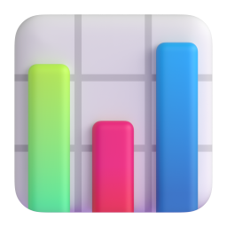

ELCAMPUS · NEW BUSINESS REVIEW
작성일 2026-10-23
AI 업무 플랫폼
사업 타당성 검토
화이트 라벨 업무 플랫폼 + 고객별 독립 보안 클라우드 + AI 연동 + 교육
종합 판정
보류 · 가격 수용성 확인 필요
한눈에 보기
법·규제상 사업을 막는 요인은 없지만,
이 가격에 살지 확인되지 않아 판정을 보류한다
起
개요
30~100인 중소기업에 자기 회사 이름의 업무 플랫폼, 고객별 독립 서버, AI 연동, 교육을 묶어 월 구독으로 판다
承
구성·비용·가격
구성요소 6개. 출시까지 9~12개월, 출시 전 투자 약 1.6억 원(그중 외부 지출 1,300~5,900만 원). Pro는 원가로 설명되고, Lite는 원가가 낮아야 성립한다
轉
손익·위험
매달 4곳이면 착수 후 40~43개월, 3곳이면 50~53개월에 투자 회수. 2곳이면 출시 후 5년 안에 회수하지 못하며, 신규 고객 수와 지불 의향은 확인되지 않았다
結
판정
종합 보류. 법·규제상 사업을 막는 요인은 없으나 시장 근거가 확인되지 않았다.
LOI(구매 의향서)로 가격·전환 의향을 확인한 뒤 재판정한다
손익 기준: 평균 월 구독료 80만 원, 고객 1곳당 월 변동비 29만 원, 월 고정비 1,900만 원, 매달 해지 2%(추정)
起
개요
분석 대상과 방법
起
개요
承
구성·비용·가격
轉
손익·위험
結
판정
사업 구상
起
承
轉
結
엘캠퍼스의 업무 플랫폼에 독립 서버·AI·교육을 묶어
월 구독으로 판다
항목
구상 내용
대상 고객
자체 IT·보안 인력이 없는 30~100인 중소기업
상품
① 화이트 라벨 업무 플랫폼(일정·프로젝트 관리를 고객사 이름으로) ② 고객마다 서버·DB를 따로 두는 독립 보안 클라우드(Silo) ③ 고객이 자기 AI 키를 등록하는 BYOK AI 연동 ④ 직무·법정의무교육과 생성형 AI 실무 교육
운영
서버·네트워크·백업은 AWS 운영 대행사(MSP)가, 앱은 개발팀이 맡는다
가격
월 구독 Lite 45만 원, Pro 75~90만 원(주력), Enterprise 250만 원 이상
투자(초기 추정)
개발 5~6개월, 초기 투자 5,000~6,000만 원, 월 운영비 1,500~2,000만 원
영업
기존 교육 고객 약 3,800곳의 교육 갱신 시점에 제안
착수 조건
① MSP와 인프라 방식 합의 ② 개발자 시간 절반 이상 보장 ③ 핵심 모듈만 5~6개월 안에 끝내는 범위 확정
BYOK: Bring Your Own Key, AI 사용료는 고객이 AI 회사에 직접 지불. MSP: Managed Service Provider(클라우드 운영 대행사)
검토 방법
起
承
轉
結
사업 구상을 구성요소로 나눠 비용을 산정하고, 손익을 추정한 뒤
다섯 영역으로 판정했다
01
구성요소 정의
고객에게 보이는 4개와 뒤에서 필요한 2개
02
요건과 비용
판매 가능한 최소 기능의 요건을 개발 기간·금액으로 산정
03
상품과 가격
요금제별 구성, 원가 기준 가격 하한
04
손익
연도별 손익, 흑자 전환, 투자 회수
05
판정
시장·기술/운영·재무·법/규제·조직
출처가 있는 숫자와 추정한 숫자를 구분해 표기했다.
개발비는 한국소프트웨어산업협회 SW기술자 평균임금(개발자 월 약 727만 원)으로 산정했다.
承
구성·비용·가격
무엇으로 이루어지고,
얼마가 들고, 얼마에 파는가
起
개요
承
구성·비용·가격
轉
손익·위험
結
판정
구성요소
起
承
轉
結
서비스는 고객에게 보이는 4개와, 여러 고객을 운영하기 위해
내부에 필요한 2개로 구성된다
A
고객에게 보임
업무 플랫폼
TASK·프로젝트 관리, 화이트 라벨
B
고객에게 보임
독립 보안 클라우드
고객별 서버·DB·백업, 인프라 통제
C
고객에게 보임
AI 연동
BYOK, AI 생성물 표시
D
고객에게 보임
교육
LMS 연동, 생성형 AI 실무 교육
E
고객에게 안 보임
고객 관리·운영 체계
운영 콘솔, 일괄 업데이트, 모니터링, 청구
F
고객에게 보임
온보딩·고객 지원
도입 설정·데이터 이전, 정기 지원
여기에 공통 항목(화면 디자인, 테스트, 법률 검토, 외부 보안 점검, 보험)이 더해진다. LMS: 학습관리시스템
업무 플랫폼의 범위
起
承
轉
結
업무 플랫폼의 최소 기능 범위는 같은 가격대 제품의
기본 요금제 수준으로 제안한다
기능
현재 사내 플랫폼
최소 기능 범위(제안)
이번 범위에서 제외
TASK 구조
TASK·WBS·QA가 분리돼 있음
TASK 하나로 통일, 하위 TASK, 단순 의존성
일정 자동 이동
뷰
게시판형 리스트
리스트·칸반·캘린더·간트
워크로드, 포트폴리오
권한
권한 관리 화면 없음
관리자·멤버·게스트, 공개·비공개
필드 단위 권한
맞춤
없음
템플릿, 엑셀 가져오기
자동화, 커스텀 필드
개발 기간
–
신규 개발 시 13주(약 3개월)
–
비교 기준은 먼데이 Standard·아사나 Starter다. Lite 45만 원을 30명이 쓰면 1명당 월 1.5만 원으로 같은 가격대다
WBS: 작업 분류 체계 · QA: 품질 검수 · 칸반·간트: 업무를 카드판·일정 막대로 보는 화면
사내 플랫폼에서 출발하는 방법
起
承
轉
結
사내 플랫폼에서 출발하는 방법은 두 가지이며,
기본 계산은 더 보수적인 신규 개발을 기준으로 했다
가. 사내 플랫폼 모듈 재활용(발췌·경량화)
나. 신규 개발 (기본 계산)
내용
일정·프로젝트 관리 모듈을 발췌해 외부 고객용으로 수정
최소 기능 범위에 맞춰 데이터 구조부터 새로 개발
장점
현재 쓰는 화면과 업무 흐름(요청 → 처리 → 검수) 활용
권한·입력 검증·회사별 구조를 처음부터 반영
업무 기능 개발
0~3개월(재사용 범위는 코드 진단 후 확정)
약 3개월
출시 전 투자
1.41억~1.62억 원 (재사용 100%~0%)
1.62억 원
출시까지
1.5명분 약 10~12개월
1.5명분 약 12개월
착수 후 회수 (매달 4곳)
37~43개월(재사용 100%면 최대 3개월 단축)
40~43개월
어느 방식이든 칸반·캘린더·간트 등 없는 뷰와 권한·입력 검증 같은 기반 결함은 보완해야 한다
재사용 범위는 개발팀의 코드 진단으로 확인
개발 기간
起
承
轉
結
초기 추정 5~6개월을 검증한 결과, 출시까지 9~12개월이 걸린다
출시까지 걸리는 기간
초기 추정
5~6개월
최소 요건 전체 개발량 · 개발자 1명이 그 일만 할 때
18개월
1.5명분 (3명이 시간 절반씩) · 구상한 투입 조건
12개월
2명분
9개월
AI 코딩 도구 사용 (1.5명분) · 연구 결과로 단축률 추정
9개월
최소 요건 18개월분의 내역
업무 플랫폼(A)
약 8개월분. 업무 기능 3개월, 계정·권한, 화이트 라벨, 관리자 화면, 접속 통제, 모바일
고객 관리·운영 체계(E)
약 2.75개월분. 운영 콘솔, 일괄 업데이트·되돌리기, DB 변경 자동화
공통(디자인·테스트)
3개월분. 수십 곳에 한꺼번에 업데이트하므로 테스트는 줄이지 않는다
나머지(B·C·D)
약 3.75개월분. 고객 환경 자동 생성, 인프라 통제, AI 키, LMS 연동
개발자 1명 기준, 추정. AI 단축률은 Copilot(GitHub의 AI 코딩 도구)·METR(미국 AI 평가 연구기관) 등의 실험으로 0~40% 적용
투자와 운영비
起
承
轉
結
출시 전 투자는 약 1.6억 원이며,
그중 외부 지출은 1,300~5,900만 원이다
출시 전 투자
1.62억 원
■ 내부 사내 인력 시간 약 1.29억 · ■ 외부 3,350만(범위 1,300~5,900만): AI 교육 콘텐츠 2,000만, 보안 점검 550만, MSP 구축 500만, 법률 300만
월 고정비
1,900만 원
■ 내부 약 1,200만(개발 유지보수 1,100만, 야간·주말 장애 대응 100만) · ■ 외부 약 700만: 마케팅 325만, AWS 150만, MSP 150만, 운영 도구·보험 등 73만
고객 1곳당 월 변동비
29만 원
■ 내부 고객 지원 인건비 12만 · ■ 외부 17만: 전용 서버·DB 10만, MSP 4만, 보안 3만. 신규 1곳당 온보딩 65만 원(한 번)
중간값 기준. 내부는 사내 인력 투입 시간을 금액으로 환산한 값, 외부는 실제 외부 지출
상품 구성
起
承
轉
結
요금제는 세 가지로 구성되지만, Lite·Pro·Enterprise를 가르는
내용 일부는 아직 정해지지 않았다
구성요소
Lite
Pro(주력)
Enterprise
대상·가격
30인 이하 · 월 45만 원
50인 이하 · 월 75~90만 원
100인 이상 · 월 250만 원 이상
업무 플랫폼
기본 프로젝트 관리(화이트 라벨)
같음
같음
독립 보안 클라우드
고객별 서버·DB
같음 + MSP 보안 관제
네트워크까지 분리한 전용 서버
교육
정해지지 않음
생성형 AI 실무 교육 무한 열람
같음
고객 지원
정해지지 않음
월 정기 기술 지원
전담 기술 지원
일회성 상품
표준 온보딩 100만 원(연간 계약 시 면제)
같음
맞춤 구축 500~1,000만 원
미정 사항은 Lite의 지원·교육, Pro의 정기 지원 횟수와 75만/90만 원 구분 기준, Enterprise “전담”의 정의,
온보딩의 데이터 이전 포함 여부다
가격 근거
起
承
轉
結
Pro 가격은 원가로 설명되지만,
Lite 45만 원은 원가가 낮아야 성립한다
고객 1곳당 마진 60%에 필요한 가격
변동비 19만 원
48만 원
변동비 29만 원
72만 원
변동비 41만 원
102만 원
고객 40곳으로 고정비를 회수할 때 필요한 평균 가격
변동비 29만 원
82만 원
직원 1명당 월 가격
Pro를 30~50인이 쓸 때
1.5~3.0만 원
Lite를 20~30인이 쓸 때
1.5~2.3만 원
플로우 Standard / Pro
1.4만 / 2.2만 원
Google Workspace(AI 포함)
약 2.0만 원
ChatGPT Business(AI만)
약 2.8만 원
하이웍스(그룹웨어)
약 0.4만 원
60%는 비교 기준(구상 단계 가정은 70%). 가격 = 변동비 ÷ (1 − 목표 마진율). 경쟁 제품 가격은 각 사 공개 요금
轉
손익·위험
매달 몇 곳이 들어오느냐가
손익을 가른다

起
개요
承
구성·비용·가격
轉
손익·위험
結
판정
연도별 손익
起
承
轉
結
매달 4곳이면 착수 후 40~43개월,
3곳이면 50~53개월에 투자를 회수한다
누적 손익, 출시 후 60개월 (출시 전 투자 1.62억 원 포함)
매달 4곳이면 출시 후 12개월째 월 흑자(43곳), 31개월째 회수, 착수 후 40~43개월
매달 3곳이면 출시 후 16개월째 월 흑자(41곳), 41개월째 회수, 착수 후 50~53개월
+10억
+5억
0
−3억
출시
12
24
36
48
60개월
31개월 회수
41개월 회수
+11.5억
+5.4억
1년차
2년차
3년차
매달 4곳
연말 고객
43곳
77곳
103곳
매출
2.32억
5.96억
8.81억
연간 손익
−1.11억
+1.21억
+3.03억
매달 3곳
연말 고객
32곳
58곳
78곳
매출
1.74억
4.47억
6.61억
연간 손익
−1.40억
+0.34억
+1.70억
“1년차”는 출시 후 첫 12개월. 착수부터 세면 개발 9~12개월이 앞에 붙는다. 해지 매달 2%(추정)
민감도 분석
起
承
轉
結
투자 회수 시점에 가장 큰 영향을 주는 변수는
평균 구독료, 매달 신규 고객 수, 고객당 변동비다
변경한 조건 (한 번에 하나씩)
매달 신규
변동비 19만 원 또는 평균 구독료 90만 원
4곳
사내 플랫폼 재활용, 재사용 100%
4곳
AI 코딩 도구 사용
4곳
기본 조건
4곳
기본 조건
3곳
변동비 41만 원
4곳
평균 구독료 65만 원(Lite가 많을 때)
4곳
신규가 적을 때
2곳
평균 구독료 65만 원
3곳
착수 후 투자 회수 · 옅은 부분은 개발 기간 차이
35~38개월
37~40개월
38~40개월
40~43개월
50~53개월
51~54개월
54~57개월
출시 후 5년 안에 못 함
출시 후 5년 안에 못 함
12
24
36
48
60개월
기본: 구독료 80만, 변동비 29만, 고정비 1,900만, 투자 1.62억 원, 해지 매달 2%(추정). 착수 후 = 출시 후 + 개발 9~12개월
매달 신규 고객 수
起
承
轉
結
매달 신규 3~4곳은 근거가 확인되지 않은 값으로,
갱신 시점 고객의 2.4~6.3%가 구매해야 나온다
기존 교육 고객
약 3,800곳
회사 자료
그중 30~100인 기업
760~1,520곳
20~40%로 가정(분포 자료 없음)
한 달에 갱신 시점이 오는 곳
63~127곳
갱신이 1년 내내 고르게 온다고 가정
필요한 전환율
3.2~6.3%
매달 4곳일 때
2.4~4.7%
매달 3곳일 때
3년 동안 쌓이는 신규(매달 4곳)
144곳
대상 기업의 9~19%
이 전환율의 현실성을 판단할 자료는 확인되지 않았으며, 기존 고객 외 신규 영업은 반영하지 않았다
시장
起
承
轉
結
수요는 확인되지만, 이 가격에 도구를 바꿀지는
반대 근거가 더 많다
주요 찬성 근거
수요
52.7%
중소기업 근로자 AI 활용률
70.4%
생성형 AI 도입 로드맵이 없는 중소기업
53.3%
AI 도입 시 보안·유출 우려
주요 반대 근거
가격 수용성
49.1%
정보보호 애로 1위: 예산 확보
3.6~3.8배
고객의 연간 지출(기존 교육비 대비, 추정)
90% 이상
정부 AI 융합훈련의 훈련비 지원
찾지 못함
이 상품에 월 75~90만 원을 낸 국내 사례
출처: 대한상의 SGI(2026.6), 메가존클라우드·파운드리(2025.8), 과기정통부·KISIA 정보보호 실태조사(2025), 고용노동부(2026.1). 3.6~3.8배는 추정
실행 위험
起
承
轉
結
일정과 품질의 주된 위험은 기술보다 인력 부족이다
위험
내용
수준
개발자 겸직
3명이 LMS 유지보수와 병행한다. 신사업이 밀리거나 LMS 품질이 떨어진다
높음
전담 PO 부재
최소 기능 범위를 정하고 관리할 책임자가 필요하다. 범위가 늘면 일정도 늘어난다
높음
인프라 경험 부족
MSP가 서버를 맡아도 일괄 업데이트·DB 변경·앱 장애 대응은 개발팀 몫이다
중간~높음
앱 장애 대응 공백
밤·주말 대응 주체와 비용이 정해지지 않았다
중간
고객 지원 인력
Pro의 정기 지원·교육 인력이 초기 추정 운영비에 없어, 이 분석에서는 변동비에 반영했다
중간
경영진 기대와의 차이
“사내 플랫폼을 그대로 쓰게”를 기대하지만, 모듈을 재활용하든 신규 개발하든 외부 고객용 개발이 필요하다
중간
PO: 제품 책임자. 무엇을 만들고 무엇을 뺄지 정하는 사람
結
판정
종합 보류,
재판정에 필요한 확인 사항

起
개요
承
구성·비용·가격
轉
손익·위험
結
판정
착수 조건
起
承
轉
結
구상 단계에서 정한 착수 조건 세 가지가
아직 하나도 충족되지 않았다
조건 1
미충족
인프라 방식 합의
MSP 견적·협의 전. 고객별 AWS 계정 방식인지 공용 계정 방식인지도 미정
충족하려면
MSP 2~3곳 견적과 계정 방식 결정
조건 2
확인 안 됨
개발 시간 보장
보장 합의 확인 안 됨. 보장돼도 1.5명분이라 출시까지 약 12개월
충족하려면
개발자 시간 보장에 대한 경영진 합의
조건 3
미충족
범위 통제(5~6개월)
최소 요건은 1.5명분 약 12개월, AI 코딩 도구를 써도 약 9개월. 5~6개월에 맞는 범위는 미정
충족하려면
5~6개월에 맞는 개발 범위 확정
영역별 판정
起
承
轉
結
네 영역은 조건부, 시장은 보류다
영역
가능
조건부
보류
부적합
근거와 조건
시장
보류
수요 근거는 있으나, 지불·전환 의향은 반대 근거가 많고 직접 확인한 자료가 없다
기술·운영
조건부
방식은 적절하며 출시까지 9~12개월. 사내 코드 재사용 범위는 진단 전
재무
조건부
매달 4곳이면 착수 후 40~43개월 회수. 허용 회수 기간은 경영진이 정한다
법·규제
조건부
사업을 막는 규정은 없음. 부가통신 신고·손해배상 보험·ISMS 해당 여부 확인 필요
조직
조건부
개발 시간 보장, 전담 PO, 지원 인력 모두 미정
종합
보류
부적합이 없고 보류가 하나라도 있으면 종합은 보류
ISMS: 정보보호 관리체계 인증. 부가통신 신고: 인터넷 서비스 사업자가 하는 신고
종합 판정
結
보류
가격 수용성과 도구 전환 의향을 먼저 확인해야 한다
부적합 영역은 없으며 기술·재무·법·조직은 조건부다.
다만 “30~100인 기업이 월 75~90만 원을 내고 기존 업무 도구를 바꾼다”는 가정과
매달 신규 고객 수가 확인되지 않았고, 구상 단계의 착수 조건도 충족되지 않았다.
시장 확인은 개발 없이 기존 고객 접점으로 2~3개월이면 가능하다.
판단 기준
起
承
轉
結
네 가지 핵심 변수가 확인되면 판정이 바뀌며,
허용 회수 기간은 경영진이 정한다
핵심 변수
확인 방법
기준선
기준선에 못 미치면
평균 월 구독료
기존 교육 고객 LOI. 월 75만 원 이상 조건 10곳 이상, 또는 유료 선계약 5곳 이상
평균 80만 원 이상
65만 원·매달 3곳이면
출시 후 5년 안에 못 함
매달 신규 고객
LOI 응답률, 30~100인 고객 수
4곳: 착수 후 40~43개월
3곳: 50~53개월
2곳이면 출시 후 5년 안에 못 함
고객당 변동비
MSP 2~3곳 견적, 지원 범위 확정
월 29만 원 이하
41만 원이면 착수 후 51~54개월(4곳)
개발 인력 투입
개발자가 실제로 투입할 수 있는 시간
2명분 이상(약 9개월)
1.5명분이면 약 12개월
부적합 신호
인터뷰 대부분이 “AI 교육은 좋지만 업무 도구는 지금 것을 쓰겠다”고 답하거나,
받을 수 있는 가격이 월 65만 원 아래로 나오거나, 신규가 매달 2곳 수준일 때
기준선은 현재 산정 결과이며, MSP 견적·교육 콘텐츠 제작비·LOI 결과가 확보되면 재산정한다
확인할 것
起
承
轉
結
개발 착수 전 확인 사항은 대부분
고객·협력사·사내 확인으로 해결된다
확인 항목
확인 대상
영향을 받는 숫자
가격별 구매 의향, 업무 도구 전환 의향, 최소 기능 범위로 충분한지
기존 교육 고객(LOI·시연)
평균 구독료, 매달 신규
고객별 AWS 계정 방식과 공용 계정 방식의 구축비·월정액
MSP 2~3곳
출시 전 투자, 변동비
개발자가 실제로 투입할 수 있는 시간, 사내 인건비, 전담 PO
경영진·개발팀
개발 일정, 출시 전 투자
신규 생성형 AI 교육 콘텐츠 제작비
교육 사업부
출시 전 투자
사내 플랫폼 코드의 재사용 범위
개발팀
업무 기능 개발량
부가통신 신고·손해배상 보험·ISMS 해당 여부, 위탁 계약·SLA
법무
고정비, 출시 전 투자
강조한 첫 줄이 최우선 확인 사항. SLA: 서비스 수준 약정(장애 시 복구 시간 등)